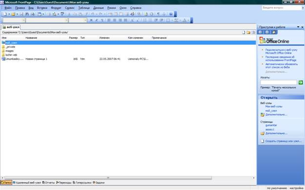
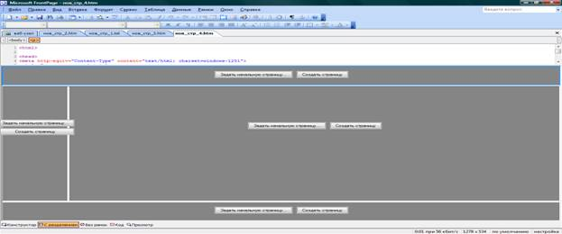

Amaliy ish №5.
Front Page дастури WYSWYG (What you see what you get) сарасига кирувчи дастурдир. Front Page дастури ёрдамида Wеб матн киритиш уларни таҳрирлаш ва графиклардан фойдаланишгиппербоғламалар ёрдамида турли ҳил wеб саҳифаларни бир бирига улаш ва бошқа амалларни бажариш мнмкин. Шу билан бирга Front Page дастурида яратилган Wеб саҳифани назорат қилиш имкониятини яратади. Дастур барча офис дастурлари каби юқори ва пастки меню бандидан иборат.
Топшириқлар панели ёрдамида тайёр Wеб саҳифалар мавжуд бўлиб, уларга керакли маълумотларни киритиш мумкин. Front Page дастурида энг кўп қўлланиладиган амал саҳифани кўриш регистрларини алмаштириш ҳисобланади.
Саҳифани 4хил режимда кўриш мумкин.
- Десигн. Кўринишни дизайн режимида Wеб саҳифакар устида дизайн операсиялари бажарилган жараёнда фойдаланилади.
- Сплит режимида юқори аниқликдаги HTML кодлари билан танишиш ва зарур бўлганда уларни ўзгартириш киритиш имконияти туғилади.
- Cоде режимида тайёр Wеб саҳифа билан HTML кодлари биргаликда ишлаши мумкин.
Прериев режимида тайёр WEB саҳифани кўриш мумкин.
- Аввало пуск-программи-миcрософт Front Page ишчи дастур ойнаси очилади.

- Сўнгра менюлар қаторидаги cоздание бўлимидан другие шаблон страниса бандини танлаймиз ва у жойдан ўзимизга мақул келган wеб дизайн кўринишини танлаймиз ва ўзимизнинг wеб сайтимиз диазайни уcун зарур бўлган расм, клип,мусиқа, тугмача, ва шунга ўҳшаш элементларни киритамиз.
